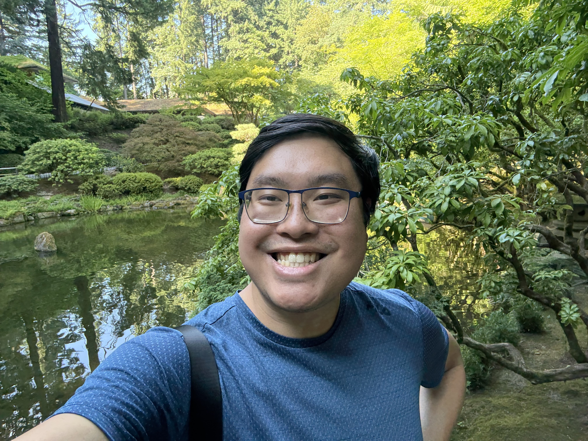
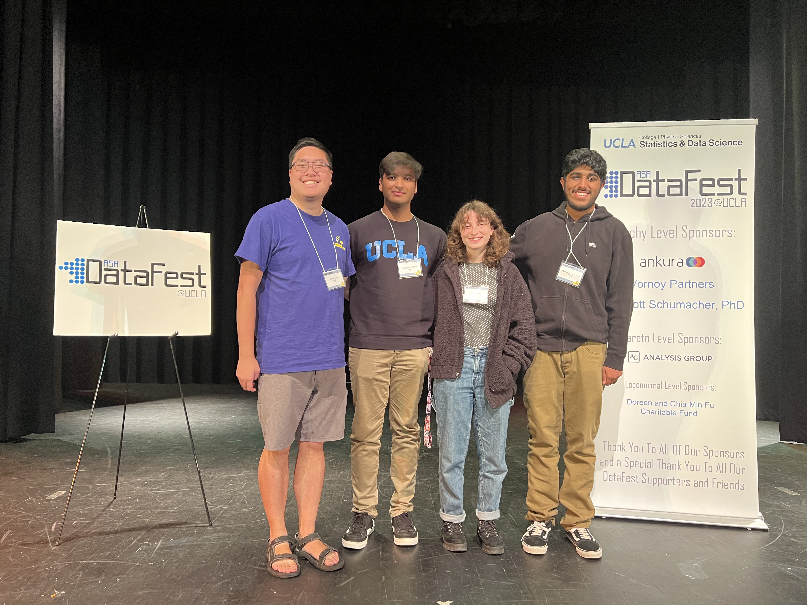
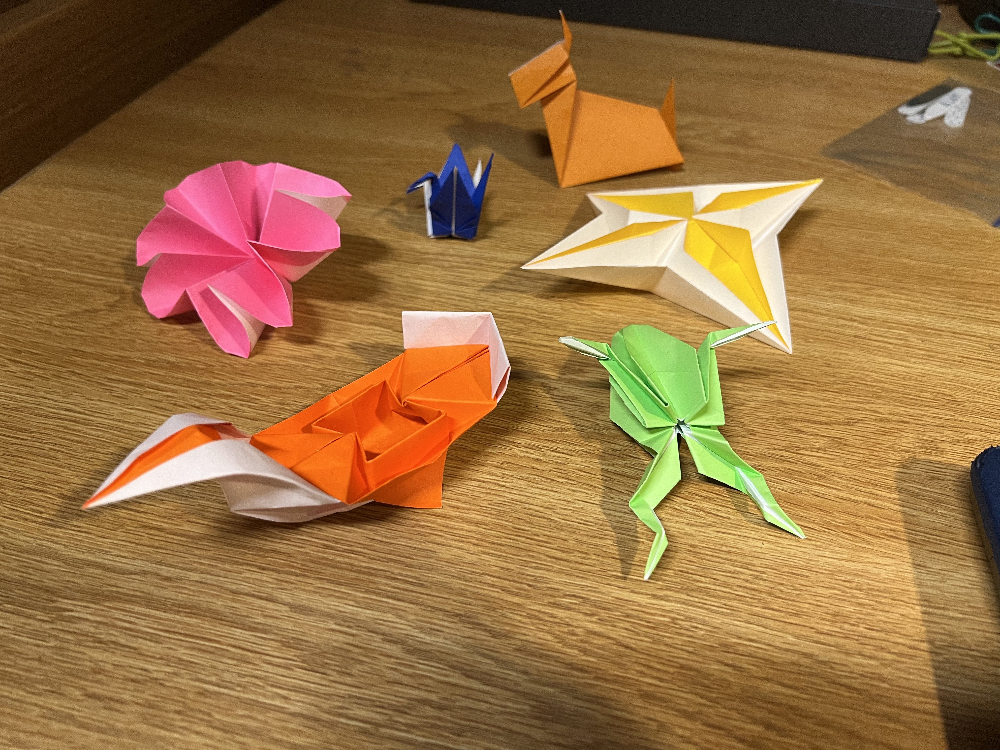

About Me
Hello! My name is Damien Ha and I am a recent college graduate with a B.S. in Statistics and Data Science from the University of California, Los Angeles, having attended from 2020 to 2025.
Growing up in the Bay Area surrounded by the latest and greatest innovations in science and technology, I developed an interest in STEM subjects early in my life, especially math, and thus chose to pursue statistics and data science as a way to harness statistical and mathematical knowledge toward real-world applications. I started my academic career as a Data Theory major at UCLA, a degree housed by both the Mathematics and Statistics departments, meant to train undergraduates in the rigorous mathematical theory behind data science as preparation for graduate school. Ultimately, I discovered I had a preference for more applied statistical knowledge in my coursework, but because of my academic history with the math department, I have some background in theoretical and applied mathematics as well. Over the course of my academic career, I built a foundation in probability, statistical modeling, and machine learning, and applied this knowledge both to coursework and hands-on projects.
I have experience with various languages and tools such as Python, C++, R, Tableau and SQL. Throughout my time at UCLA, I have used my skills in many different contexts, from exploring classification models and deep learning to creating visualizations and building dashboards for accessible insights. I've done this through campus organizations, coursework, personal projects, and hackathons (see below my team from ASA DataFest 2023)

As someone who started my academic career partially in my university's math department, I was involved with the Undergraduate Math Council from my sophomore year onward, creating resources and connecting math students to opportunities to succeed and grow. I was also a part of DataResolution's Data Blog team as a Data Journalist a few quarters during my time as an undergraduate, and I joined the Northeast Big Data Innovation Hub's UCLA chapter of the National Student Data Corps (NSDC) as a Communications and Resources Board Member in its early stages and concluded my tenure on the Board as a Project Lead. All these experiences allowed me to develop, grow, and exercise my analytical and data related skills in hands-on projects and experiences. Even now, I'm always open to learning new skills, programming languages, and technologies!
My Hobbies and Interests
When I’m not working with data, I enjoy trying new food and drink or playing my clarinet.
You can find several of my opinions on various restaurants, boba shops, and cafes throughout LA and the Bay on Yelp.
Additionally, the clarinet and music in general has been a part of my life for quite awhile and allows a creative outlet to balance out my analytical work. I completed a significant amount of musicology and music industry coursework at UCLA with the intention of completing a minor in Musicology, and I was a part of multiple musical performance ensembles throughout both my time in high school and college. Watch my last performance with the UCLA Symphonic Band here.
Another art form I particularly enjoy is origami. I love that so many different things can be created just from a sheet of paper without additional tools, and as a result I find that it's a very accessible activity.

I grew up practicing martial arts for much of my childhood, primarily Shotokan Karate. I spent about 15 years of my life practicing karate and participating in tournaments, and it had a significant impact on my life as I entered adulthood. Nowadays, my primary physical actitivities are walking and running, or occasionally hiking with friends.
If you’d like to collaborate, talk about any of my interests, or just say hi, feel free to reach out on my contact page.